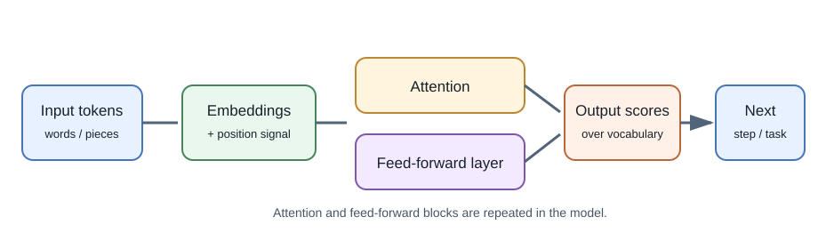
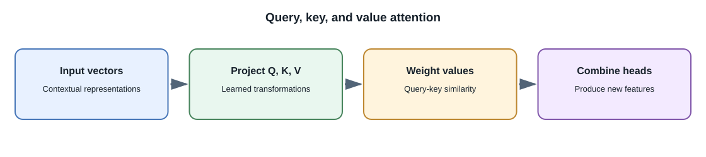

Neural Networks and Transformers¶
Introduction¶
A neural network is a mathematical model made of connected operations with parameters adjusted during training. A transformer is a neural network architecture that uses attention to process relationships among items in a sequence or other structured input. Transformers underpin many modern language models and are also used for images, audio, video, and multimodal tasks.
Neural-network basics¶
A network receives numeric inputs, applies parameterized operations and nonlinear transformations through layers, then produces outputs. During training, an objective (loss) measures how far predictions are from training targets. An optimization algorithm calculates how to adjust parameters to reduce that loss.
- Forward pass: compute a model output from an input.
- Loss: numeric training objective measuring some prediction error.
- Backpropagation: calculate how the loss changes with model parameters.
- Optimizer: update parameters using those calculated gradients.
- Epoch: one pass through the training dataset, in training setups that use epochs.
Inference uses the learned parameters to produce outputs; it usually does not update them.
Attention and the transformer idea¶
Attention lets a model compute which parts of an input are relevant to processing another part. In a language sequence, the representation for a token can incorporate information from other tokens. Self-attention computes these relationships within the same sequence.
The transformer architecture commonly combines attention with feed-forward layers, residual connections, normalization, and positional information. Details differ across model architectures. The key idea is that attention helps model long-range relationships and can be parallelized during training more readily than recurrent sequence processing.
In a simplified self-attention operation, each input representation is projected into a query (Q), key (K), and value (V). Similarity between a query and keys determines weights over the values. Multiple attention heads learn different relationships in parallel and their results are combined. This helps the model contextualize tokens, but the weights are not a human-readable explanation of why an answer is true.


Encoder, decoder, and encoder-decoder patterns¶
| Pattern | Broad behavior | Common use |
|---|---|---|
| Encoder-style | Build contextual representations of the input | Classification, search embeddings, extraction |
| Decoder-style | Generate an output sequence one token at a time | Chat, completion, code generation |
| Encoder-decoder | Encode an input and generate a related output | Translation, summarization, speech or text transformations |
These are useful architectural families, not a complete list of current designs. Some systems combine components or use other architectures.
Vision transformers commonly split an image into patches and process them as a sequence of representations. Audio models may use frames, learned tokens, or other encodings. Their inputs and training objectives are specialized; a text-only decoder cannot automatically process raw media.
From text to model input¶
Text is split into tokens, which are converted to numeric identifiers and then to learned embeddings (vectors). The model processes these representations and produces output scores. A decoder-style language model selects or samples a next token, appends it to the context, and repeats until a stopping condition is met.
The output is generated token by token. This is why a long response takes time, why context limits matter, and why the model can produce a plausible continuation that is not factually grounded.
Why use transformers?¶
Attention gives models a flexible way to relate different positions in an input, and large-scale training can produce representations useful across many tasks. Trade-offs include substantial compute and memory requirements, quadratic attention cost in some common designs with sequence length, latency for autoregressive generation, and difficult-to-predict behavior. Modern systems use optimizations and architectures that change these costs; do not assume one cost profile fits every model.
Full-stack developer perspective¶
You generally call an inference endpoint rather than implement backpropagation or attention yourself. Knowing the high-level flow helps explain prompt length, context windows, streaming responses, embeddings, and latency. For a production feature, treat the model version and its input format as dependencies that can change.
Common misconceptions¶
- Attention is a model operation, not human attention or an explicit source citation.
- A transformer is an architecture, not a single model or product.
- An embedding is a learned numeric representation, not a guaranteed definition of meaning.
- Neural networks do not retrieve exact training examples on command like a database query.